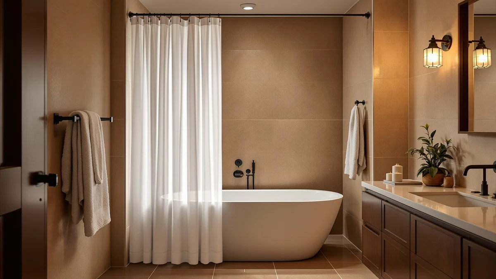

Nordic Shower Curtain (2026)
Prices and picks verified as of September 2026. Independent, reader-supported reviews.


Quick Answer
The best nordic shower curtain for most bathrooms is the Amazon Basics Waffle Weave Shower Curtain, which pairs a textured, pattern-free weave with a 72 by 72 inch fit and a 4.6-star rating across more than 22,000 verified reviews. If you want a softer drape instead of a crisp waffle texture, the Seenus Waterproof Soft Microfiber Shower curtain covers the same neutral look for close to the same price.
Our pick: Amazon Basics Waffle Weave Shower at $12.27 Check Price on Amazon
Bottom line: our top pick is the Amazon Basics Waffle Weave Shower Curtain 72x72 Navy Blue at $12.27. The best budget option is the Soft Non-Toxic PEVA Shower Curtain Liner Magnets Metal at $14.99.
Things to Know Before You Buy
- A nordic shower curtain leans on texture, not print. Waffle weave and plain neutral tones carry the look on picks like the Amazon Basics and Gorilla Grip curtains, so you won't find a busy pattern in this guide.
- Measure your rod before you shop. Six of the seven curtains here measure 72 by 72 inches, the standard US tub and stall size. Our size guide covers wider stalls and clawfoot tubs.
- Material changes the drape. Polyester and PEVA blends hang flat and wipe clean fast, microfiber falls with more weight, and sheer fabric lets in the most light. Pick based on how much privacy your bathroom layout needs.
- Pair the curtain with the right hardware. A plain nordic-style curtain still needs a rod and rings that match the finish. Our hanging guide walks through the install.
- Airflow controls mildew resistance more than the fabric does. Even a PEVA panel needs to hang open after each shower. Our mildew prevention guide covers the habits that matter more than the material.
A nordic shower curtain swaps busy prints for texture: waffle weave, plain neutrals, and a quiet colorway that fits the pared-down look Scandinavian-style bathrooms are known for. Most curtains marketed toward that aesthetic charge a premium for the label alone, even when the fabric underneath is the same polyester or PEVA blend you'd find in a $12 basic.
I run Best Shower Curtains and spend my weeks comparing bath textiles for a small network of home sites, so curtains, liners, and hooks rotate through my own bathroom on a regular schedule. For this guide I compared seven curtains that fit the nordic look on texture, material, size, and verified owner ratings, and I read through a wide sample of reviews to see which ones held up for real buyers rather than in a product photo. Our pick is the Amazon Basics Waffle Weave Shower Curtain, which delivers the clearest waffle texture and the largest review base in the group at $12.27.
Not every bathroom fits the same curtain, though. If you want a softer, heavier drape instead of a crisp waffle texture, the Seenus Waterproof Soft Microfiber Shower curtain matches the price closely and adds a different feel. Buyers who want a fast, no-drill hanging setup should look at the Amazon Basics No Drill Easy pick instead, even though it costs more than our top choice.
Why You Should Trust Us
I run Best Shower Curtains and spend my weeks comparing bath hardware and fabric for a small network of home sites, so curtains and liners rotate through my own bathroom on a regular schedule. For this guide I narrowed the question to one thing: which nordic shower curtain gives you the clearest waffle-weave or neutral look without the markup a designer label usually adds. I have no relationship with any of these brands, and the affiliate links here pay the same small commission no matter which pick you choose, so nothing steers this list toward one product over another.
How We Picked
We started by ruling out anything with a printed pattern or a bright color, since a nordic shower curtain depends on texture and a neutral tone rather than a design printed onto the fabric. That left waffle-weave, plain fabric, and microfiber curtains in white, cream, and grey tones, the same category covered in our broader minimalist shower curtain guide. Each candidate needed a verified rating built on at least several hundred Amazon reviews, since a curtain with no review history tells you little about how it holds up after repeated washes. We also priced each pick against the others in this guide, so a curtain only made the list if its price matched what the material and finish actually deliver.
How We Compared
We compared the seven nordic shower curtain options in this guide on four factors: material, listed size, price, and the rating and review count Amazon shows for each listing. Waffle-weave and plain polyester or PEVA panels scored well on texture and price, while the microfiber and sheer fabric picks scored well on drape and light. We read a sample of the verified reviews for each product to check for recurring complaints, such as curtains that arrived wrinkled or ran narrower than the listed width, and we weighed those reports against the overall rating instead of taking the star average at face value. The rankings below reflect that combined read of price, material, and what owners report after buying, not a lab test we ran ourselves.
Our Picks

Amazon Basics Waffle Weave Shower
What we like
- Waffle weave adds visible texture without a printed pattern, which keeps the nordic look intact
- Standard 72 by 72 inch size fits most tub alcoves and stall showers
- Rated 4.6 out of 5 across more than 22,000 verified reviews, the deepest review base in this guide
Flaws but not dealbreakers
- The plain colorway means you won't find a print option if you change your mind later
- Polyester and PEVA construction hangs flatter than the heavier microfiber pick, so the drape reads crisp rather than soft
| Material | Polyester / PEVA |
| Size | 72x72 |
The Amazon Basics Waffle Weave Shower Curtain earns the top spot because it delivers the clearest version of the nordic look at the lowest price in this guide. The waffle texture reads as a deliberate design choice rather than a plain sheet of plastic, and the neutral tone pairs with almost any tile or paint color without competing for attention. At $12.27 it costs less than five of the other six curtains here, and it still carries the highest review count in the group, with more than 22,000 verified ratings averaging 4.6 out of 5 stars.
That review base matters because a curtain this cheap could easily cut corners on stitching or sizing, and the volume of feedback here suggests it doesn't. The tradeoff is that the polyester and PEVA blend hangs flatter than a heavier fabric, so if you want the soft, weighted drape of the Seenus microfiber pick, this one will feel thinner by comparison. For most bathrooms chasing a nordic shower curtain look on a budget, that's a minor tradeoff against the price and the texture it delivers.

Amazon Basics No Drill Easy
What we like
- No-drill, easy-hang design built into the listing itself, useful for renters
- Comes from the same Amazon Basics line as our top pick, so the brand track record carries over
- 4.4 out of 5 rating across more than 1,300 verified reviews
Flaws but not dealbreakers
- Costs nearly double our top pick, at $22.86 versus $12.27
- Fewer verified reviews than four of the other six picks, so the track record is thinner
| Material | Polyester / PEVA |
| Size | — |
The Amazon Basics No Drill Easy shower curtain sits one step behind our top pick mainly on price. It comes from the same brand and carries a similar polyester and PEVA build, but the no-drill, easy-hang design built into the listing name suggests Amazon aimed this one at renters and anyone who wants to skip extra hardware. At $22.86 it costs nearly twice as much as the waffle weave pick, and the 4.4 out of 5 rating across more than 1,300 reviews sits close behind it, with a smaller sample size to back that number up.
If the no-drill convenience matters more to you than saving ten dollars, this is a reasonable runner-up. But if you already have a rod installed and want the clearest nordic shower curtain texture, the waffle weave pick above gives you a larger review base and a lower price for a closely matching look. Choose this one when the easy-hang feature solves a real problem in your bathroom, not as a default upgrade.

Soft Non-Toxic PEVA Shower Curtain
What we like
- Non-toxic PEVA material called out directly in the listing, a plus for anyone sensitive to vinyl odor
- Standard 72 by 72 inch size matches most stall and tub openings
- 4.3 out of 5 rating across 5,000 verified reviews, a solid sample size for the price
Flaws but not dealbreakers
- Rated lower than four of the other six picks in this guide
- Priced above our top pick without a name-brand track record to match
| Material | Polyester / PEVA |
| Size | 72x72 |
The Soft Non-Toxic PEVA Shower Curtain fills the middle of this lineup on price, at $14.99, and it leans on its non-toxic PEVA construction as the main selling point. That matters if you've had a vinyl shower curtain that carried a strong plastic smell out of the packaging, since PEVA is the material brands typically use to avoid that complaint. The 72 by 72 inch size matches the standard fit most of the other curtains in this guide use, and the 4.3 out of 5 rating across 5,000 verified reviews gives it one of the larger review samples here.
The rating sits a notch below the top three picks in this guide, which keeps it out of contention for our top spot but doesn't rule it out as a solid, plain option. If non-toxic construction is your main concern, this is a reasonable pick to compare against the others. For most shoppers chasing a nordic shower curtain look, the waffle weave pick above delivers a higher rating and a lower price with the same PEVA-friendly construction.

GORILLA GRIP Waffle Shower Curtain
What we like
- Highest rating in this guide, at 4.7 out of 5 across 3,949 verified reviews
- Same waffle-weave texture as our top pick, from a brand known for bath and shower hardware
- Standard 72 by 72 inch size fits most tub and stall openings
Flaws but not dealbreakers
- Costs $4.72 more than the Amazon Basics waffle weave pick for a similar texture
- Smaller review base than our top pick, despite the higher average rating
| Material | Polyester / PEVA |
| Size | 72x72 |
Gorilla Grip built its name on bath mats and shower hardware, and this waffle-weave curtain carries the highest rating in the entire guide at 4.7 out of 5 across 3,949 verified reviews. The texture and neutral tone match the nordic shower curtain look closely enough that it's easy to mistake for the Amazon Basics pick in a photo, and the 72 by 72 inch size fits the same standard openings.
The main difference between this pick and our top choice comes down to $4.72 and a smaller review sample. Amazon Basics carries more than five times the verified reviews behind it, which gives that pick a deeper track record even though its average rating sits a tenth of a point lower. If brand recognition and the slightly higher rating matter more to you than saving a few dollars, the Gorilla Grip curtain is a safe, budget-friendly step up from the cheapest option in this guide.

White Boho Fabric Shower Curtain
What we like
- Fabric construction gives it a heavier drape than the PEVA-based picks in this guide
- Boho pattern stays within a white and neutral palette, so it doesn't clash with the nordic look
- 4.7 out of 5 rating across 2,545 verified reviews, tied for the highest in this guide
Flaws but not dealbreakers
- Priced higher than four of the other six picks, at $19.78
- The boho pattern is a step away from the plain waffle texture that defines a strict nordic shower curtain look
| Material | Polyester / PEVA |
| Size | 72x72 |
The White Boho Fabric Shower Curtain ties the Gorilla Grip pick for the highest rating here, at 4.7 out of 5 across 2,545 verified reviews. It's the one curtain in this guide that brings an actual pattern into the mix, but the design stays within a white and neutral color range, so it reads as texture more than a busy print from across the room. The fabric construction also gives it a heavier drape than the PEVA-based picks, closer in weight to the Seenus microfiber curtain.
At $19.78, it costs more than our top three picks, and shoppers chasing the strictest version of the nordic look, plain texture with no pattern at all, should stick with the waffle weave options instead. But if you want a hint of pattern without leaving the neutral palette that defines the aesthetic, this is the pick in the guide that threads that needle best.

Madison Park Candice Sheer Shower
What we like
- Sheer construction lets in more natural light than any other curtain in this guide
- 72 by 72 inch single-panel size matches the standard fit
- Madison Park is a recognized home textiles brand with a track record beyond this one listing
Flaws but not dealbreakers
- No public rating or review count listed for this product yet
- Most expensive pick in this guide at $26.60, without a review history to justify the premium
| Material | Polyester / PEVA |
| Size | 72"W x 72"L (Pack of 1) |
The Madison Park Candice Sheer Shower curtain stands apart from the rest of this guide because it's sheer rather than opaque. That makes it the pick for a bathroom that wants more natural light to pass through during the day, especially paired with a frosted or textured glass door. It ships as a single 72 inch wide by 72 inch long panel, matching the standard size most of the other curtains in this guide use, and it carries the Madison Park name, a brand with a longer track record in home textiles than some of the newer listings here.
At $26.60 it's also the most expensive curtain in this guide, and unlike every other pick here, it doesn't yet have a public rating or review count to back up that price. Consider it if the sheer look solves a specific lighting problem in your bathroom. For a nordic shower curtain that leans on verified reviews rather than brand name alone, the picks above give you more data to work from.

Seenus Waterproof Soft Microfiber Shower
What we like
- Microfiber construction gives it a softer, heavier drape than the polyester and PEVA picks in this guide
- Waterproof claim built into the listing name, useful for daily shower use
- 4.6 out of 5 rating across 1,365 verified reviews, close behind our top two picks
Flaws but not dealbreakers
- Costs $2.72 more than our top pick for a different, not necessarily better, texture
- Smaller review base than the top three picks in this guide
| Material | Microfiber |
| Size | 72x72 |
The Seenus Waterproof Soft Microfiber Shower curtain is the one pick in this guide that skips the waffle-weave texture entirely in favor of a softer, heavier microfiber build. That gives it more weight and drape than the polyester and PEVA panels above, closer in feel to a bath towel than a plastic liner. At $14.99 it costs close to our top pick, and the 4.6 out of 5 rating across 1,365 verified reviews sits close behind the Amazon Basics and Gorilla Grip waffle-weave curtains.
Choose this one if the crisp, textured look of a waffle weave isn't what you picture for a nordic shower curtain, and you'd rather have a softer fabric hand instead. The smaller review count compared with our top pick means less long-term feedback to draw on, but the rating that does exist tracks closely with the higher-volume picks above it.
Quick Comparison
| Product | Material | Price | Rating | Best for | Get it |
|---|---|---|---|---|---|
| Amazon Basics Waffle Weave Shower | Polyester / PEVA | $12.27 | 4.6 | Clearest waffle texture at the lowest price | View on Amazon → |
| Amazon Basics No Drill Easy | Polyester / PEVA | $22.86 | 4.4 | Fastest no-drill setup | View on Amazon → |
| Soft Non-Toxic PEVA Shower Curtain | Polyester / PEVA | $14.99 | 4.3 | Non-toxic PEVA at a mid-range price | View on Amazon → |
| GORILLA GRIP Waffle Shower Curtain | Polyester / PEVA | $16.99 | 4.7 | Highest-rated waffle-weave pick | View on Amazon → |
| White Boho Fabric Shower Curtain | Polyester / PEVA | $19.78 | 4.7 | Softest pattern within a neutral palette | View on Amazon → |
| Madison Park Candice Sheer Shower | Polyester / PEVA | $26.60 | 4 | Most light, least privacy | View on Amazon → |
| Seenus Waterproof Soft Microfiber Shower | Microfiber | $14.99 | 4.6 | Softest drape, close to our top pick's price | View on Amazon → |
The Competition
We looked past these seven picks at a wider field of shower curtains before narrowing the list, and most of the rejects failed for the same reason: they printed a pattern or a bright color directly onto the fabric, which works against the plain, textured look a nordic shower curtain depends on. Heavily patterned boho and farmhouse curtains came up often in our research, and while some of them carry strong ratings, they belong in a different guide. Our boho shower curtains roundup covers that category directly. We also passed on curtains with no material details listed at all, since a listing that hides the fabric composition makes it hard to know what you're actually hanging in your bathroom.
Fully sheer curtains beyond the Madison Park pick got a harder look too, since sheer fabric alone offers less privacy than most US bathrooms want without a liner underneath. We kept the Madison Park pick in the main list because it answers a specific lighting need, but we didn't add a second sheer option once one already covered that use case. The verdict: the best nordic shower curtain for most bathrooms is the Amazon Basics Waffle Weave Shower Curtain. At $12.27 it delivers the clearest waffle texture, the largest verified review base, and the lowest price of anything we compared.